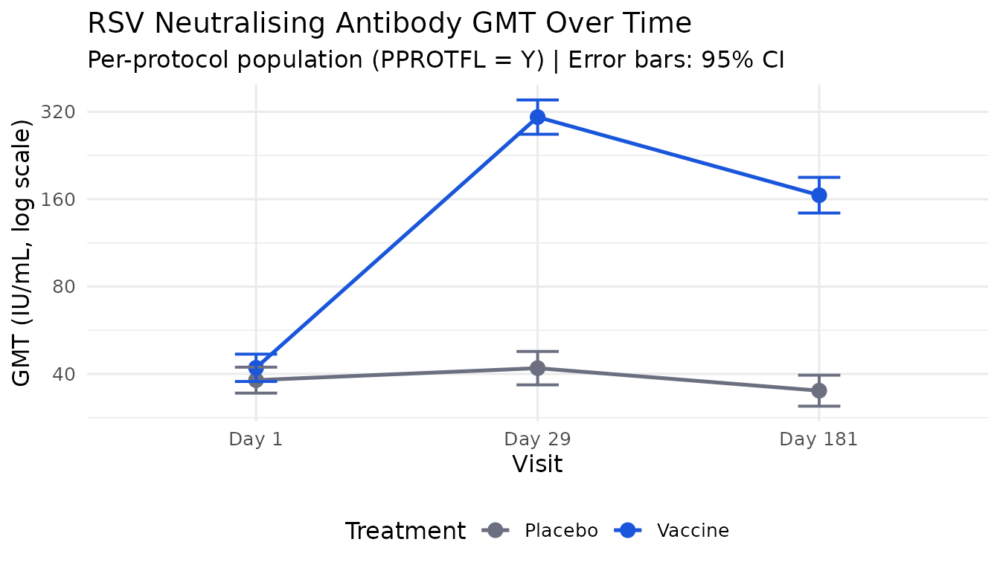
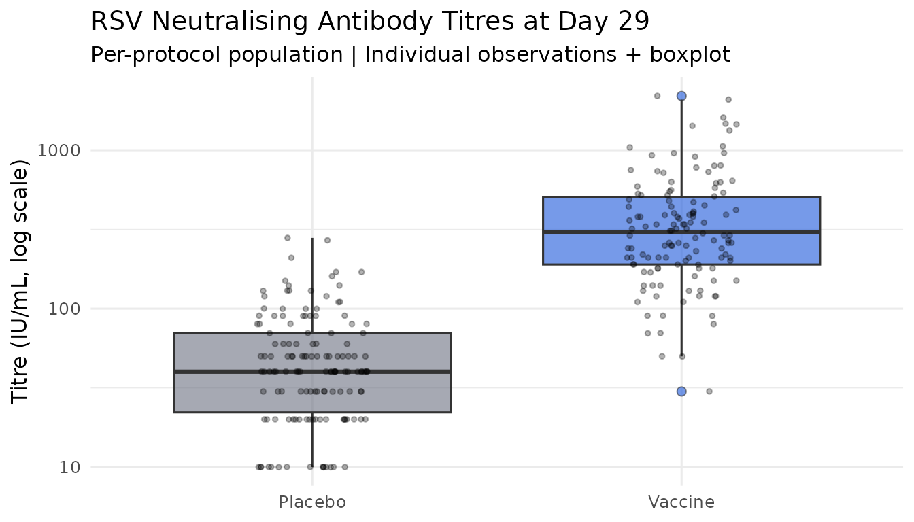

21 CFR Part 11-compliant vaccine immunogenicity analysis in R
Ndoh Penn
2026-06-26
Source:vignettes/articles/regulog-vaccine.Rmd
regulog-vaccine.RmdBackground
Vaccine immunogenicity analyses supporting regulatory submissions are subject to 21 CFR Part 11 requirements: every analytical decision, data access event, and result must be traceable, time-stamped, and tamper-evident. In practice, this means maintaining a paper audit trail that is rarely connected to the actual analysis code — creating a gap that regulators increasingly scrutinise.
This article demonstrates how regulog closes that gap.
We walk through a complete immunogenicity analysis for a simulated Phase
III vaccine trial, building a hash-chained, electronically signed audit
trail entirely within R.
The trial is a randomised, double-blind, placebo-controlled study evaluating a novel adjuvanted subunit vaccine against respiratory syncytial virus (RSV) in adults aged 60 years and older. The primary immunogenicity endpoint is the geometric mean titre (GMT) ratio of RSV-neutralising antibodies at Day 29 relative to baseline.
Setup
#>
#> Attaching package: 'dplyr'#> The following objects are masked from 'package:stats':
#>
#> filter, lag#> The following objects are masked from 'package:base':
#>
#> intersect, setdiff, setequal, unionSimulate the immunogenicity dataset
We simulate a realistic CDISC ADaM-structured immunogenicity dataset (ADIS — Subject-Level Immunogenicity Data) for 300 participants across two treatment arms. Titres follow a log-normal distribution, consistent with real immunogenicity data.
n_per_arm <- 150L
n_total <- n_per_arm * 2L
# Subject-level data
adsl <- data.frame(
STUDYID = "RSV-VAC-301",
USUBJID = sprintf("RSV301-%04d", seq_len(n_total)),
TRT01P = rep(c("Vaccine", "Placebo"), each = n_per_arm),
TRT01PN = rep(c(1L, 2L), each = n_per_arm),
AGE = round(rnorm(n_total, mean = 68, sd = 5)),
SEX = sample(c("M", "F"), n_total, replace = TRUE, prob = c(0.45, 0.55)),
SEROFL = "Y", # seronegative at baseline (eligible)
ITTFL = "Y",
PPROTFL = sample(c("Y", "N"), n_total, replace = TRUE, prob = c(0.94, 0.06)),
stringsAsFactors = FALSE
)
# Immunogenicity titres — ADIS structure
visits <- data.frame(
AVISIT = c("Day 1", "Day 29", "Day 181"),
AVISITN = c(1L, 29L, 181L),
stringsAsFactors = FALSE
)
adis <- expand.grid(
USUBJID = adsl$USUBJID,
AVISITN = visits$AVISITN,
stringsAsFactors = FALSE
) |>
merge(adsl[, c("USUBJID", "TRT01P", "ITTFL", "PPROTFL")],
by = "USUBJID"
) |>
merge(visits, by = "AVISITN") |>
arrange(USUBJID, AVISITN)
set.seed(2026)
adis$AVAL <- NA_real_
for (i in seq_len(nrow(adis))) {
trt <- adis$TRT01P[i]
vis <- adis$AVISITN[i]
baseline_log <- rnorm(1L, mean = log(40), sd = 0.6)
adis$AVAL[i] <- if (trt == "Vaccine") {
switch(as.character(vis),
"1" = exp(baseline_log),
"29" = exp(baseline_log + rnorm(1L, mean = log(8), sd = 0.5)),
"181" = exp(baseline_log + rnorm(1L, mean = log(4), sd = 0.6))
)
} else {
switch(as.character(vis),
"1" = exp(baseline_log),
"29" = exp(baseline_log + rnorm(1L, mean = log(1.1), sd = 0.4)),
"181" = exp(baseline_log + rnorm(1L, mean = log(0.9), sd = 0.4))
)
}
}
adis$AVAL <- pmax(10, round(adis$AVAL / 10) * 10)
adis$STUDYID <- "RSV-VAC-301"
adis$PARAM <- "RSV Neutralising Antibody Titre (IU/mL)"
adis$PARAMCD <- "RSVNABT"
# Introduce realistic missingness (~4%)
miss_idx <- sample(nrow(adis), size = round(nrow(adis) * 0.04))
adis$AVAL[miss_idx] <- NA_real_
adis <- adis |>
group_by(USUBJID) |>
mutate(
AVALOG = log2(AVAL),
BASE = AVAL[AVISITN == 1L][1L],
BASLOG = log2(BASE),
RATIO = AVAL / BASE,
LRATIO = log2(RATIO)
) |>
ungroup()
cat(sprintf(
"ADIS: %d rows, %d subjects, %d visits, %.1f%% missing\n",
nrow(adis),
n_distinct(adis$USUBJID),
length(unique(adis$AVISITN)),
mean(is.na(adis$AVAL)) * 100
))#> ADIS: 900 rows, 300 subjects, 3 visits, 4.0% missing
# Write to disk so rl_read()/with_log() have real files to load
tmp_adsl <- tempfile(fileext = ".csv")
tmp_adis <- tempfile(fileext = ".csv")
write.csv(adsl, tmp_adsl, row.names = FALSE)
write.csv(adis, tmp_adis, row.names = FALSE)Initialise the audit session
regulog_init() opens the session and writes the genesis
record immediately. SAP version, protocol, data cut, and analysis set
are captured as the first logged note.
log <- regulog_init(
app = "RSV-VAC-301-primary-immunogenicity",
version = "1.0.0",
user = "jsmith",
path = file.path(tempdir(), "audit_RSV301_primary_v1.rlog")
)
log_note(
log,
"Primary immunogenicity analysis per SAP v2.0, Section 5.1. Protocol:
RSV-VAC-301. Data cut: 2026-05-15. Analysis set: immunogenicity
per-protocol population (PPROTFL = Y)."
)#> regulog: note logged
log#> <regulog>
#> App: RSV-VAC-301-primary-immunogenicity v1.0.0
#> User: jsmith
#> Entries: 1
#> Path: /tmp/RtmpmaShoj/audit_RSV301_primary_v1.rlogLog data access
Loading ADSL and ADIS is logged automatically with
with_log() — row and column counts are captured at the
moment of read.
with_log(log, {
adsl_loaded <- read(read.csv, tmp_adsl)
adis_loaded <- read(read.csv, tmp_adis)
})Apply analysis population
The primary immunogenicity analysis uses the per-protocol population (PPROTFL = Y). We document the population filter and the reason for each subject excluded.
adis_pp <- adis |> filter(PPROTFL == "Y")
n_excluded <- n_distinct(adis$USUBJID) - n_distinct(adis_pp$USUBJID)
log_action(log,
action = "apply_pp_population",
object = "RSV-VAC-301 per-protocol population",
reason = sprintf(
"Restricted to per-protocol population per SAP Section 3.2. ITT: %d subjects | PP: %d subjects | Excluded: %d (protocol deviations)",
n_distinct(adis$USUBJID),
n_distinct(adis_pp$USUBJID),
n_excluded
)
)#> regulog: logged action 'apply_pp_population' on 'RSV-VAC-301 per-protocol population'
# Log subject counts by treatment arm
arm_counts <- adis_pp |>
filter(AVISITN == 1L) |>
count(TRT01P)
for (i in seq_len(nrow(arm_counts))) {
log_note(
log,
sprintf("PP population count — %s: n = %d", arm_counts$TRT01P[i], arm_counts$n[i])
)
}#> regulog: note logged#> regulog: note loggedHandle missing titres
miss_d29 <- adis_pp |>
filter(AVISITN == 29L, is.na(AVAL))
log_note(
log,
sprintf(
"Missing data review — Day 29 missing titres: %d subjects (%.1f%%) — excluded from GMT analysis per SAP",
nrow(miss_d29),
nrow(miss_d29) / nrow(filter(adis_pp, AVISITN == 29L)) * 100
)
)#> regulog: note logged
for (subj in miss_d29$USUBJID) {
log_note(
log,
sprintf("Subject excluded (missing data) — USUBJID %s: Day 29 titre missing — excluded from primary analysis", subj)
)
}#> regulog: note logged
#> regulog: note logged
#> regulog: note logged
#> regulog: note logged
#> regulog: note logged
#> regulog: note logged
#> regulog: note logged
#> regulog: note logged
#> regulog: note logged
#> regulog: note logged
adis_primary <- adis_pp |>
filter(AVISITN == 29L, !is.na(AVAL))
log_action(log,
action = "define_primary_analysis_set",
object = "RSV-VAC-301 primary analysis dataset",
reason = sprintf(
"Final primary analysis dataset: PP, Day 29, non-missing titre. n = %d subjects",
nrow(adis_primary)
)
)#> regulog: logged action 'define_primary_analysis_set' on 'RSV-VAC-301 primary analysis dataset'Primary analysis: GMT and GMT ratio
The primary endpoint is the GMT ratio (Vaccine / Placebo) at Day 29. GMTs are computed as the back-transformed mean of log2-titres.
gmt_d29 <- adis_primary |>
group_by(TRT01P) |>
summarise(
n = n(),
gmt = 2^mean(log2(AVAL), na.rm = TRUE),
gmt_lo = 2^(mean(log2(AVAL)) - qt(0.975, n() - 1) * sd(log2(AVAL)) / sqrt(n())),
gmt_hi = 2^(mean(log2(AVAL)) + qt(0.975, n() - 1) * sd(log2(AVAL)) / sqrt(n())),
.groups = "drop"
)
log_action(log,
action = "compute_gmt_day29",
object = "GMT at Day 29",
reason = sprintf(
"Computed GMT and 95%% CI at Day 29 per SAP Section 5.1. %s",
paste(
sprintf(
"%s: GMT = %.1f (95%% CI: %.1f, %.1f)",
gmt_d29$TRT01P, gmt_d29$gmt,
gmt_d29$gmt_lo, gmt_d29$gmt_hi
),
collapse = " | "
)
)
)#> regulog: logged action 'compute_gmt_day29' on 'GMT at Day 29'
vac_gmt <- gmt_d29$gmt[gmt_d29$TRT01P == "Vaccine"]
pbo_gmt <- gmt_d29$gmt[gmt_d29$TRT01P == "Placebo"]
gmt_ratio <- vac_gmt / pbo_gmt
log_vac <- log2(adis_primary$AVAL[adis_primary$TRT01P == "Vaccine"])
log_pbo <- log2(adis_primary$AVAL[adis_primary$TRT01P == "Placebo"])
ttest <- t.test(log_vac, log_pbo)
gmt_ratio_lo <- 2^(ttest$conf.int[1L])
gmt_ratio_hi <- 2^(ttest$conf.int[2L])
p_value <- ttest$p.value
log_action(log,
action = "compute_gmt_ratio",
object = "GMT ratio (Vaccine/Placebo)",
reason = sprintf(
"Computed GMT ratio and 95%% CI per SAP Section 5.1. GMT ratio = %.2f (95%% CI: %.2f, %.2f), p %s",
gmt_ratio, gmt_ratio_lo, gmt_ratio_hi,
ifelse(p_value < 0.001, "< 0.001", sprintf("= %.3f", p_value))
)
)#> regulog: logged action 'compute_gmt_ratio' on 'GMT ratio (Vaccine/Placebo)'
cat(sprintf(
"\nGMT ratio (Vaccine / Placebo): %.2f (95%% CI: %.2f, %.2f)\np-value: %s\n",
gmt_ratio, gmt_ratio_lo, gmt_ratio_hi,
ifelse(p_value < 0.001, "< 0.001", sprintf("%.3f", p_value))
))#>
#> GMT ratio (Vaccine / Placebo): 7.33 (95% CI: 6.07, 8.86)
#> p-value: < 0.001Seroconversion analysis
A subject is a seroconverter if the Day 29 titre is >= 4-fold the baseline titre. We log the definition, the computation, and the result.
log_note(
log,
"Seroconversion defined as >= 4-fold rise from baseline (Day 29 / Day 1 >= 4)"
)#> regulog: note logged
adis_sc <- adis_pp |>
filter(AVISITN == 29L, !is.na(AVAL), !is.na(BASE)) |>
mutate(SEROCONV = as.integer(RATIO >= 4))
sc_rates <- adis_sc |>
group_by(TRT01P) |>
summarise(
n = n(),
n_sc = sum(SEROCONV),
rate = mean(SEROCONV),
rate_lo = prop.test(sum(SEROCONV), n())$conf.int[1L],
rate_hi = prop.test(sum(SEROCONV), n())$conf.int[2L],
.groups = "drop"
)
log_action(log,
action = "compute_seroconversion",
object = "Seroconversion rates",
reason = sprintf(
"Computed per SAP Section 5.2. %s",
paste(
sprintf(
"%s: %d/%d (%.1f%%, 95%% CI: %.1f%%-%.1f%%)",
sc_rates$TRT01P, sc_rates$n_sc, sc_rates$n,
sc_rates$rate * 100,
sc_rates$rate_lo * 100,
sc_rates$rate_hi * 100
),
collapse = " | "
)
)
)#> regulog: logged action 'compute_seroconversion' on 'Seroconversion rates'
knitr::kable(
sc_rates |>
mutate(
rate = sprintf("%.1f%%", rate * 100),
rate_lo = sprintf("%.1f%%", rate_lo * 100),
rate_hi = sprintf("%.1f%%", rate_hi * 100)
) |>
select(TRT01P, n, n_sc, rate, rate_lo, rate_hi),
col.names = c(
"Treatment", "N", "Seroconverters",
"Rate", "95% CI Lower", "95% CI Upper"
),
caption = "Seroconversion rates at Day 29 (PP population)"
)| Treatment | N | Seroconverters | Rate | 95% CI Lower | 95% CI Upper |
|---|---|---|---|---|---|
| Placebo | 133 | 16 | 12.0% | 7.2% | 19.1% |
| Vaccine | 128 | 99 | 77.3% | 68.9% | 84.1% |
GMT persistence at Day 181
adis_d181 <- adis_pp |>
filter(AVISITN == 181L, !is.na(AVAL))
gmt_d181 <- adis_d181 |>
group_by(TRT01P) |>
summarise(
n = n(),
gmt = 2^mean(log2(AVAL), na.rm = TRUE),
gmt_lo = 2^(mean(log2(AVAL)) - qt(0.975, n() - 1) * sd(log2(AVAL)) / sqrt(n())),
gmt_hi = 2^(mean(log2(AVAL)) + qt(0.975, n() - 1) * sd(log2(AVAL)) / sqrt(n())),
.groups = "drop"
)
log_action(log,
action = "compute_gmt_day181",
object = "GMT persistence at Day 181",
reason = sprintf(
"Computed GMT persistence per SAP Section 5.3 (secondary endpoint). %s",
paste(
sprintf(
"%s: GMT = %.1f (95%% CI: %.1f, %.1f)",
gmt_d181$TRT01P, gmt_d181$gmt,
gmt_d181$gmt_lo, gmt_d181$gmt_hi
),
collapse = " | "
)
)
)#> regulog: logged action 'compute_gmt_day181' on 'GMT persistence at Day 181'Outlier review
outlier_review <- adis_primary |>
group_by(TRT01P) |>
mutate(
mean_log = mean(log2(AVAL)),
sd_log = sd(log2(AVAL)),
z_score = (log2(AVAL) - mean_log) / sd_log,
outlier = abs(z_score) > 3
) |>
ungroup()
n_outliers <- sum(outlier_review$outlier, na.rm = TRUE)
log_note(
log,
sprintf(
"Outlier screen (|z| > 3 on log2 scale): %d flagged — retained per SAP (no clinical basis for exclusion; sensitivity analysis planned)",
n_outliers
)
)#> regulog: note logged
if (n_outliers > 0L) {
for (subj in outlier_review$USUBJID[outlier_review$outlier]) {
z <- outlier_review$z_score[outlier_review$USUBJID == subj]
log_note(
log,
sprintf("Outlier flagged — USUBJID %s: z = %.2f — retained, flagged for sensitivity", subj, z)
)
}
}Visualisations
gmt_time <- adis_pp |>
filter(!is.na(AVAL)) |>
group_by(TRT01P, AVISITN, AVISIT) |>
summarise(
gmt = 2^mean(log2(AVAL)),
gmt_lo = 2^(mean(log2(AVAL)) - qt(0.975, n() - 1) * sd(log2(AVAL)) / sqrt(n())),
gmt_hi = 2^(mean(log2(AVAL)) + qt(0.975, n() - 1) * sd(log2(AVAL)) / sqrt(n())),
.groups = "drop"
) |>
mutate(AVISIT = factor(AVISIT, levels = c("Day 1", "Day 29", "Day 181")))
ggplot(gmt_time, aes(x = AVISIT, y = gmt, colour = TRT01P, group = TRT01P)) +
geom_line(linewidth = 0.9) +
geom_point(size = 3) +
geom_errorbar(aes(ymin = gmt_lo, ymax = gmt_hi), width = 0.15, linewidth = 0.7) +
scale_y_log10(breaks = c(20, 40, 80, 160, 320, 640)) +
scale_colour_manual(values = c("Vaccine" = "#1a56db", "Placebo" = "#6b6f80")) +
labs(
title = "RSV Neutralising Antibody GMT Over Time",
subtitle = "Per-protocol population (PPROTFL = Y) | Error bars: 95% CI",
x = "Visit",
y = "GMT (IU/mL, log scale)",
colour = "Treatment"
) +
theme_minimal(base_size = 12) +
theme(legend.position = "bottom")
log_note(log, "Figure generated: GMT over time by treatment arm (PP population)")#> regulog: note logged
adis_primary |>
ggplot(aes(x = TRT01P, y = AVAL, fill = TRT01P)) +
geom_boxplot(alpha = 0.6, outlier.shape = 21, outlier.size = 2) +
geom_jitter(width = 0.15, alpha = 0.3, size = 1) +
scale_y_log10() +
scale_fill_manual(values = c("Vaccine" = "#1a56db", "Placebo" = "#6b6f80")) +
labs(
title = "RSV Neutralising Antibody Titres at Day 29",
subtitle = "Per-protocol population | Individual observations + boxplot",
x = NULL,
y = "Titre (IU/mL, log scale)",
fill = "Treatment"
) +
theme_minimal(base_size = 12) +
theme(legend.position = "none")
log_note(log, "Figure generated: individual titre distribution at Day 29 (PP population)")#> regulog: note loggedResults summary
results <- data.frame(
Endpoint = c(
"GMT at Day 29 — Vaccine",
"GMT at Day 29 — Placebo",
"GMT Ratio (Vaccine/Placebo)",
"Seroconversion Rate — Vaccine",
"Seroconversion Rate — Placebo",
"GMT at Day 181 — Vaccine",
"GMT at Day 181 — Placebo"
),
Result = c(
sprintf(
"%.1f (%.1f, %.1f)", vac_gmt,
gmt_d29$gmt_lo[gmt_d29$TRT01P == "Vaccine"],
gmt_d29$gmt_hi[gmt_d29$TRT01P == "Vaccine"]
),
sprintf(
"%.1f (%.1f, %.1f)", pbo_gmt,
gmt_d29$gmt_lo[gmt_d29$TRT01P == "Placebo"],
gmt_d29$gmt_hi[gmt_d29$TRT01P == "Placebo"]
),
sprintf("%.2f (%.2f, %.2f)", gmt_ratio, gmt_ratio_lo, gmt_ratio_hi),
sprintf(
"%.1f%% (%.1f%%, %.1f%%)",
sc_rates$rate[sc_rates$TRT01P == "Vaccine"] * 100,
sc_rates$rate_lo[sc_rates$TRT01P == "Vaccine"] * 100,
sc_rates$rate_hi[sc_rates$TRT01P == "Vaccine"] * 100
),
sprintf(
"%.1f%% (%.1f%%, %.1f%%)",
sc_rates$rate[sc_rates$TRT01P == "Placebo"] * 100,
sc_rates$rate_lo[sc_rates$TRT01P == "Placebo"] * 100,
sc_rates$rate_hi[sc_rates$TRT01P == "Placebo"] * 100
),
sprintf(
"%.1f (%.1f, %.1f)",
gmt_d181$gmt[gmt_d181$TRT01P == "Vaccine"],
gmt_d181$gmt_lo[gmt_d181$TRT01P == "Vaccine"],
gmt_d181$gmt_hi[gmt_d181$TRT01P == "Vaccine"]
),
sprintf(
"%.1f (%.1f, %.1f)",
gmt_d181$gmt[gmt_d181$TRT01P == "Placebo"],
gmt_d181$gmt_lo[gmt_d181$TRT01P == "Placebo"],
gmt_d181$gmt_hi[gmt_d181$TRT01P == "Placebo"]
)
),
stringsAsFactors = FALSE
)
knitr::kable(results,
col.names = c("Endpoint", "Estimate (95% CI)"),
caption = "Immunogenicity results summary — RSV-VAC-301 (PP population)"
)| Endpoint | Estimate (95% CI) |
|---|---|
| GMT at Day 29 — Vaccine | 307.0 (267.9, 351.7) |
| GMT at Day 29 — Placebo | 41.9 (36.7, 47.8) |
| GMT Ratio (Vaccine/Placebo) | 7.33 (6.07, 8.86) |
| Seroconversion Rate — Vaccine | 77.3% (68.9%, 84.1%) |
| Seroconversion Rate — Placebo | 12.0% (7.2%, 19.1%) |
| GMT at Day 181 — Vaccine | 165.2 (143.4, 190.3) |
| GMT at Day 181 — Placebo | 35.0 (31.0, 39.6) |
log_action(log,
action = "results_compiled",
object = "Final immunogenicity results table",
reason = sprintf(
"Primary endpoint: GMT ratio = %.2f (%.2f, %.2f), p %s — %s pre-specified criterion",
gmt_ratio, gmt_ratio_lo, gmt_ratio_hi,
ifelse(p_value < 0.001, "< 0.001", sprintf("%.3f", p_value)),
ifelse(gmt_ratio_lo > 2.0, "MEETS", "DOES NOT MEET")
)
)#> regulog: logged action 'results_compiled' on 'Final immunogenicity results table'Electronic sign-off
Under 21 CFR Part 11, electronic signatures must include the
signatory’s name, the date and time, and the meaning of the signature.
log_signature() implements this — the signer identity is
resolved automatically from the session user set at
regulog_init() and cannot be overridden, and the number of
entries covered is captured automatically.
log_signature(
log,
"I confirm that this analysis was conducted in accordance with SAP v2.0
and that the results presented are accurate and complete to the best
of my knowledge."
)#> regulog: signature applied by 'jsmith' covering 27 entriesVerify the audit chain
verify_log() recomputes the SHA-256 hash chain from the
first entry to the last. Any post-hoc modification to any entry breaks
the chain and is immediately detectable.
verify_log(log)#> regulog: Log intact: 28 entries, chain unbrokenExport the audit trail
trail <- export_audit_trail(log,
format = "csv",
signed = TRUE,
path = file.path(tempdir(), "audit_trail_RSV301_primary_v1.csv")
)#> regulog: exported 28 row(s) to /tmp/RtmpmaShoj/audit_trail_RSV301_primary_v1.csv
# Preview the audit trail
filter_log(log) |>
head(10L) |>
mutate(
time = substr(timestamp, 12L, 19L),
action = ifelse(is.na(action), type, action)
) |>
select(time, type, action, object) |>
knitr::kable(caption = "Audit trail — first 10 entries")| time | type | action | object |
|---|---|---|---|
| 16:19:45 | NOTE | note | NA |
| 16:19:45 | ACTION | data_read | /tmp/RtmpmaShoj/file1c13189741ba.csv |
| 16:19:45 | ACTION | data_read | /tmp/RtmpmaShoj/file1c13475f9f31.csv |
| 16:19:46 | ACTION | apply_pp_population | RSV-VAC-301 per-protocol population |
| 16:19:46 | NOTE | note | NA |
| 16:19:46 | NOTE | note | NA |
| 16:19:46 | NOTE | note | NA |
| 16:19:46 | NOTE | note | NA |
| 16:19:46 | NOTE | note | NA |
| 16:19:46 | NOTE | note | NA |
What the audit trail proves
The exported CSV provides a complete, tamper-evident record of:
- Who ran the analysis (analyst identity, electronic sign-off)
- When every step was executed (UTC timestamps)
- What data were loaded and from where, with row and column counts captured at read time
- Why every decision was made (mandatory reason fields)
- What subjects were excluded and why
- What outliers were flagged and what decision was taken
- What results were produced
Any modification to the CSV after export will break the SHA-256 hash
chain, which verify_log() will detect — satisfying the
tamper-evidence requirement of 21 CFR Part 11 §11.10(e) and EU Annex 11
Clause 9.
Session information
#> R version 4.6.1 (2026-06-24)
#> Platform: x86_64-pc-linux-gnu
#> Running under: Ubuntu 24.04.4 LTS
#>
#> Matrix products: default
#> BLAS: /usr/lib/x86_64-linux-gnu/openblas-pthread/libblas.so.3
#> LAPACK: /usr/lib/x86_64-linux-gnu/openblas-pthread/libopenblasp-r0.3.26.so; LAPACK version 3.12.0
#>
#> locale:
#> [1] LC_CTYPE=C.UTF-8 LC_NUMERIC=C LC_TIME=C.UTF-8
#> [4] LC_COLLATE=C.UTF-8 LC_MONETARY=C.UTF-8 LC_MESSAGES=C.UTF-8
#> [7] LC_PAPER=C.UTF-8 LC_NAME=C LC_ADDRESS=C
#> [10] LC_TELEPHONE=C LC_MEASUREMENT=C.UTF-8 LC_IDENTIFICATION=C
#>
#> time zone: UTC
#> tzcode source: system (glibc)
#>
#> attached base packages:
#> [1] stats graphics grDevices utils datasets methods base
#>
#> other attached packages:
#> [1] ggplot2_4.0.3 tidyr_1.3.2 dplyr_1.2.1 regulog_0.2.0
#>
#> loaded via a namespace (and not attached):
#> [1] gtable_0.3.6 jsonlite_2.0.0 compiler_4.6.1 tidyselect_1.2.1
#> [5] jquerylib_0.1.4 systemfonts_1.3.2 scales_1.4.0 textshaping_1.0.5
#> [9] yaml_2.3.12 fastmap_1.2.0 R6_2.6.1 generics_0.1.4
#> [13] knitr_1.51 tibble_3.3.1 desc_1.4.3 bslib_0.11.0
#> [17] pillar_1.11.1 RColorBrewer_1.1-3 rlang_1.2.0 cachem_1.1.0
#> [21] xfun_0.59 S7_0.2.2 fs_2.1.0 sass_0.4.10
#> [25] otel_0.2.0 cli_3.6.6 withr_3.0.3 pkgdown_2.2.0
#> [29] magrittr_2.0.5 digest_0.6.39 grid_4.6.1 lifecycle_1.0.5
#> [33] vctrs_0.7.3 evaluate_1.0.5 glue_1.8.1 farver_2.1.2
#> [37] ragg_1.5.2 rmarkdown_2.31 purrr_1.2.2 tools_4.6.1
#> [41] pkgconfig_2.0.3 htmltools_0.5.9